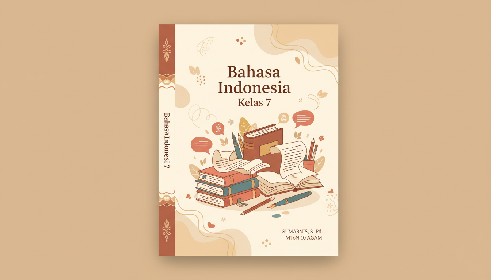

Panduan komprehensif dan elegan untuk menguasai teks deskripsi, puisi rakyat, cerita fantasi, dan teks prosedur dengan pendekatan modern dan kreatif.
Jelajahi Materi34 Pertemuan terstruktur yang dirancang untuk membangun kompetensi literasi dan numerasi kebahasaan secara bertahap dan mendalam.